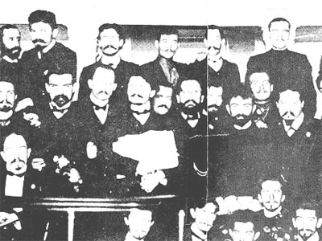

|  |
|
部分1905年第一届圣彼得堡苏维埃工人代表 |
写作时间: 1907-1909
第一次出版： 部分于1907年《我们的革命》；1909年德文版；1922年，第一版完整版，修订版，俄文版。本版由Vintage，经拉尔夫·舍恩曼许可
英文翻译： Anya Bostock
中文翻译： xloypaypa
HTML转录： David Walters
英译版校对： Einde O’Callaghan, November 2006
著作权： Permission granted by Ralph Schoenman for this on-line edition distribution by the Marxists Internet Archive only
俄罗斯的社会发展与沙俄的资本主义
俄国的资本主义
农民与土地问题
俄国革命的驱动力
春天
一月九日
十月罢工
工人代表苏维埃的创立
十月十八日
维特政府
“自由”的第一天
工作中的沙皇分子
对审查制度的猛攻
革命与反革命
十一月罢工
八小时与枪
农民的骚乱
红色舰队
论反革命的门槛
苏维埃的最后几天
十二月
总结
附件
无产阶级与俄国革命
我们的不同
权力斗争
论俄国历史发展的特点
除开第二部分的的序言
对苏维埃的工人代表的审判
苏维埃与检察官
我在法庭上的发言
那里
背面
Last updated on: 10.01.2019